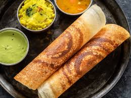
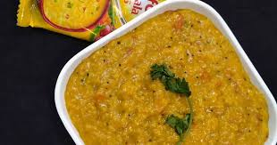

Masala dosa or masale dose or masaldosa is a variation of the popular South Indian dosa, which has its origins in Tuluva Mangalorean cuisine of Karnataka. It is made from rice, lentils, potato, fenugreek, and curry leaves, and served with chutneys and sambar.

This is a delicious stew made with lentils, spice powder, quick cook veggies & herbs. Serve it with idli, dosa or vada. This Idli sambar tastes delicious & is super aromatic!

Oats are a whole-grain food, known scientifically as Avena sativa. Oat groats, the most intact and whole form of oats, take a long time to cook. For this reason, most people prefer rolled, crushed or steel-cut oats. Instant (quick) oats are the most highly processed variety.